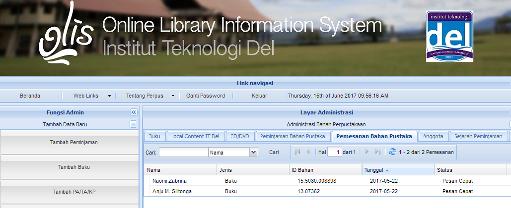

Tabel Fasilitas
By Admin
| Images | Judul | Description | Date | Actions | |
|---|---|---|---|---|---|

|
Laboratorium dan Kelas | Definisi Laboratorium Komputasi adalah ruangan yang dilabeli sebagai laboratorium komputasi yang berisi sekumpulan perangkat yang terdiri atas Komputer Desktop, Laptop, AC, projector, printer, dan perangkat lain sesuai dengan kebutuhan dari laboratorium yang dimaksud Fasilitas laboratorium komputasi dimaksudkan sebagai sarana kerja, pendidikan, penelitian maupun pengabdian pada masyarakat. Kepada para pengguna diharapkan pengertian dan kesadarannya untuk menjaga keutuhan dan keamanan peralatan yang ada, serta berperan dalam menciptakan suasana akademik yang lebih berhasil guna. Kesadaran ini hendaknya diterapkan terhadap semua peralatan sarana dan prasarana yang dimiliki oleh Institut Teknologi Del dan semua sistem komputasi lain yang dapat diakses melalui jaringan komunikasi yang tersedia. | September 25 2023 | ||

|
Akomodasi | Seluruh mahasiswa IT Del diwajibkan tinggal di asrama yang disediakan. Hal ini untuk mendukung sistem pendidikan vokasi dimana mahasiswa akan melaksanakan kegiatan akademis terjadwal sampai sore hari ditambah kegiatan mandiri hingga pukul 10 malam hari. Dengan tinggal di asrama yang lokasinya berada di dalam lingkungan kampus, mahasiswa dapat segera beristirahat setelah melaksanakan kegiatan terjadwal di kampus. Dengan beristirahat yang cukup dan baik diharapkan performansi mahasiswa dalam setiap kegiatan di dalam kampus akan maksimal. Untuk mendukung kualitas hidup berasrama, mahasiswa akan diawasi oleh Bapak/Ibu asrama dibantu oleh Kakak/Abang asrama. Dengan peraturan asrama yang diberlakukan, mahasiswa akan hidup lebih disiplin dan berbudaya. | September 25 2023 | ||
|

|
Perpustakaan | Perpustakaan Politeknik Informatika Del (PI Del) berdiri sejak tanggal 9 Januari 2002 dengan sistem pelayanan open acces (terbuka). Selanjutnya berubah nama seiring dengan berubahnya status Politeknik menjadi Institut sejak tahun 2013. Perpustakaan berganti nama menjadi Perpustakaan Institut Teknologi Del. Perpustakaan Institut Teknologi Del memiliki fungsi utama yaitu fungsi pendidikan. Pengadaan koleksi dan pengembangan minat baca internal dan eksternal Institut Teknologi Del dilakukan sebagai bagian dari kegiatan diseminasi kegiatan peningkatan minat baca. | July 16 2023 | ||

|
Kantin | Kantin Politeknik Informatika Del menyediakan menu makanan yang bergizi dan sehat untuk semua mahasiswa/i. Menu yang disediakan selalu memenuhi standard gizi, sehingga mahasiswa bisa melaksanakan aktifitas perkuliahan dengan sehat dan prima. Setiap mahasiswa diwajibkan untuk makan di kantin tiga kali setiap harinya. | July 4 2023 | ||

|
Hiburan dan Olahraga | Selain fasilitas untuk keperluan proses belajar mengajar, IT Del juga menyediakan sarana hiburan dan olahraga bagi warga kampus IT Del. Sarana ini dimaksudkan sebagai media untuk menghilangkan kejenuhan dari kegiatan sehari-hari di IT Del. | July 4 2023 | ||

|
Klinik | Praktek umum dokter Del resmi didirikan pada bulan Mei tahun 2009, terletak disamping pintu masuk ke area kampus Institut Teknologi Del. Tujuan didirikan praktek umum ini yang terutama adalah untuk melayani siswa, mahasiswa, pegawai Del tetapi selain itu juga untuk melayani masyarakat disekitar lingkungan kampus. Praktek umum ini bersifat sosial, non-profit, tetapi juga tetap berusaha menjaga mutu pelayanan agar sesuai dengan standar pelayanan termutakhir. Praktek umum ini juga bekerja sama dengan Jamsostek sebagai PPK I untuk melayani pasien-pasien yang terdaftar sebagai tanggungan Jamsostek dalam wilayah ini. Praktek umum ini bisa melayani pengobatan dasar (meliputi anak dan dewasa) hingga yang membutuhkan tindakan bedah sederhana. Di dalam praktek umum ini juga sudah tersedia obat sehingga tidak perlu membeli obat lagi di tempat lain. Saat ini praktek umum ini sedang dalam proses pengembangan menjadi klinik Yayasan Del. | June 4 2023 | ||
|
|
Ruang Terbuka | Saat kita memperhatikan lingkungan kampus di Indonesia maka mungkin hasilnya akan bertolak belakang dengan saat kita membayangkan lingkungan kampus di negara-negara maju. Membayangkan para mahasiswa kita duduk di bawah pohon-pohon hijau dan beralaskan rumput yang segar, atau membayangkan para mahasiswa melepaskan lelah setelah kuliah di kelas, mengistirahatkan otak mereka dari tumpukan teori sambil bermain bola, atau permainan lainnya di lapangan hijau sangat mungkin jarang kita lihat. Kampus Institut Teknologi Del (IT Del) tidak hanya berfungsi sebagai lembaga pendidikan saja. | July 24 2023 |